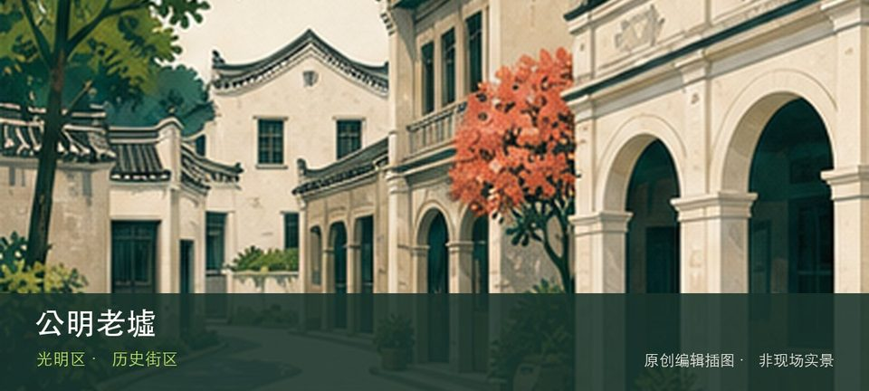

适合谁
适合建筑、地方史和社区观察者；参观时须尊重居民、宗教礼仪与生产秩序。

SHENZHEN GUIDE · 266
公明 · 历史街区
公明老墟位于公明街道，传统墟市街巷、旧商铺和仍在经营的社区商业保留光明本地生活尺度，更新与日常经营同时发生。这里不是只有一个打卡点：公明墟市街巷提供主要线索，老商铺立面补足另一层现场关系。阅读这处地点要把公明墟市街巷与老商铺立面放回仍在使用的街巷或社区中，不把历史空间当成布景。先看公开区域，再按居民生活、礼仪和开放边界调整停留，不进入封闭建筑。
WHY GO
适合建筑、地方史和社区观察者；参观时须尊重居民、宗教礼仪与生产秩序。
先核对公明老墟当天开放与入口，从公明墟市街巷开始；体力或时间不足时，在前往老商铺立面之前结束，不临时追加陌生支线。
公共交通先到公明街道片区，再以公明老墟公开参观入口为终点；多入口地点须按计划游线选择入口，并预先锁定返程站点。
车辆停在公明老墟外围正规公共停车场后步行进入；不驶入窄巷，不占居民门口、作业区或消防通道。
10 月至次年 4 月步行较舒适；夏季避开正午，雨天留意石板、台阶和老建筑周边湿滑。
NEARBY IDEAS
 编辑配图·非现场实景
编辑配图·非现场实景
深圳科学技术馆位于光明中心区，大型综合科技馆以互动展项、基础科学和未来产业连接光明科学城，内容体量足以单独安排半天以上。…
 编辑配图·非现场实景
编辑配图·非现场实景
光明科学公园位于光明中心区科技馆周边，生态水体、草地和科学主题公共空间围绕科技馆展开，是消化室内参观内容而非复制互动展项…
 授权实景图
授权实景图
虹桥公园位于光明，醒目的红色长桥穿过森林与坡地，把城市入口、观景平台和大顶岭方向连接起来，桥长与日晒不可低估。这处地点的…